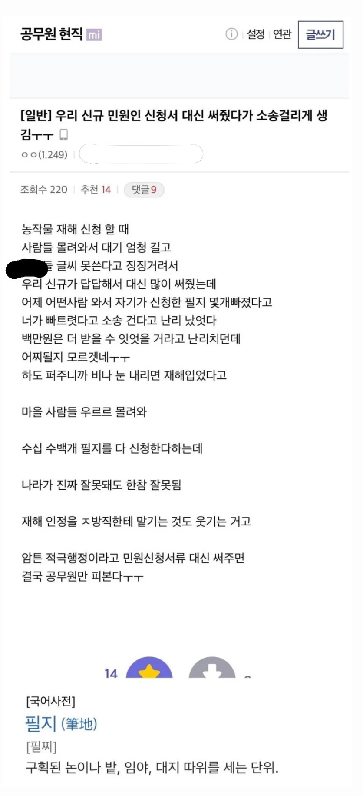

https://theqoo.net/square/4330290727

https://theqoo.net/square/4330290727

지랄노. 다 써줘도 된다. 다만 맨 밑에 서명란에만 안하면 된다.
거기는 글씨 모르면 동그라미를 그리든 선을 긋든 알아서 보고 직접 하시라고 하고 나머지는 다 적어도 아무 상관없다.
글 모른다는 할매 할매들이 한트럭인데 알어서 하라?? 다 안해보니 하는 소리임.
내가 손이 아파가(알콜중독으로 손이 덜덜)
내가 글을 몰라가(주말학교 안감)
내가 눈이 안보이가(돋보기 있음)
손아프고 글모르고 눈은 안보이는데 폰은 어떻게 하냐 근데 지 돈찾는 건 알아서 잘하더라
나도 이런거 편의점업계에서 편의점택배 도와주는거 고소당한 얘기듣고 안도와줌